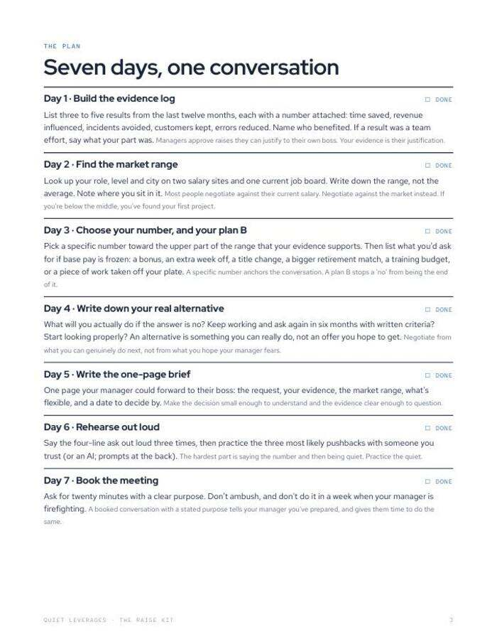
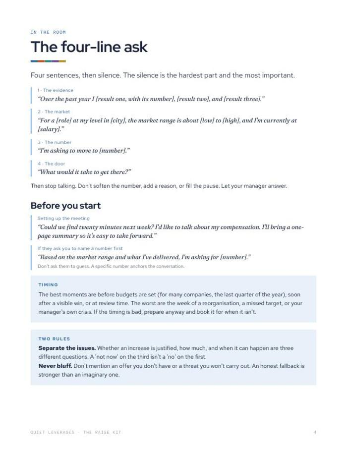
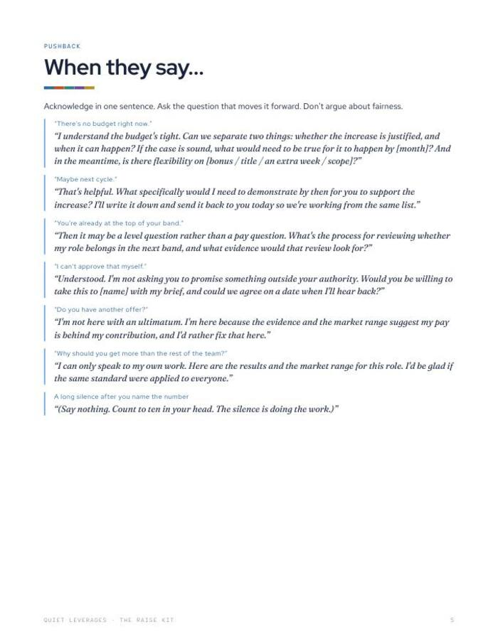
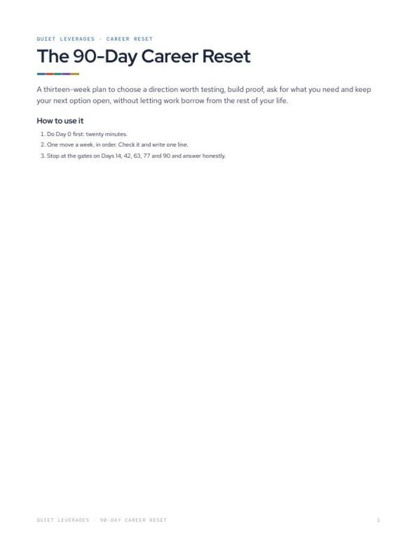

Say the number, then stop talking. Seven days to get ready for that moment.
Negotiate a raise in your current job: a seven-day plan, a four-line ask, and what to say to each of seven common pushbacks.
PDF guide + Google Sheet + Notion. Start Day 1 this week. Do not book the meeting until Day 7.

Seven days of preparation
Evidence, market range, your number, your real alternative and a one-page brief, one step a day.
A four-line ask
The evidence, the market, the number and the door. Four sentences, then silence.
Seven pushbacks answered
Calm, word-for-word responses, including 'There's no budget right now'.
days of preparation
pushbacks, each with a response
lines in the ask
US searches for 'how to negotiate salary increase in current job' are up 850% on last year. The hardest part is saying the number and then being quiet.
Google Trends, US, Jan-Sep 2026 vs 2025What you leave with
Evidence with numbers
An evidence log that turns the last twelve months into three to five results, each with a number attached.
A number you can defend
A market range, your number, and your real alternative, so you can ask without threatening to leave.
A reply for each pushback
Acknowledge in one sentence, then ask the question that moves it forward. Seven are written out.
What your number is worth
The Google Sheet calculates what your number is worth over a career, and holds a menu of non-base options if the answer is no.
The plan, the worksheets and the sheet
The guide runs the seven days. The worksheets and the Google Sheet hold your evidence, your range and the meeting record.
- The guide (PDF). The seven-day plan, the four-line ask, seven pushbacks with responses, the recap email, and what to do after a no.
- Worksheets. Evidence log, market range, one-page brief, rehearsal checklist.
- Google Sheet. Evidence log, market range, a career-value calculator, a non-base 'plan B' menu and a meeting record.
- Notion import, and AI prompts for rehearsing the conversation.



Seven days, one twenty-minute conversation
Days 1 to 4: build the case
Write the evidence log, find the market range, choose your number and plan B, and name your real alternative.
Days 5 and 6: write and rehearse
Put the request on one page your manager could forward unchanged. Say the ask aloud three times.
Day 7: book the meeting
Ask for twenty minutes with a clear purpose, then send a short recap the same day.
A good fit if your pay has not caught up
Use this if
- You do good work and your base has not moved to match it.
- You want to ask in your current job without threatening to leave.
- You want the exact words, not only a plan.
Skip it if
- You are negotiating a new offer from another company. This is built for your current job.
- You need legal advice about a contract. This is general education.
- You want a motivational talk. This is a plan with worksheets.
Why people stay without asking, in numbers
of workers say they stay in their job out of fear and economic uncertainty.
Monster, Oct 2025call themselves job huggers.
ResumeBuilder, Feb 2026upvotes on the second-highest post in r/careerguidance's top 100, one of three there about being 'too valuable to promote'.
Quiet Leverages analysis of Reddit top posts, Oct 2025-Sep 2026What readers say about The Raise Kit
Start Day 1 this week
Seven days of preparation, one conversation, and a recap that keeps the record.
- The guide (PDF) with the seven-day plan and four-line ask
- Worksheets and a Google Sheet
- Notion import and AI rehearsal prompts
- Add a second kit for $12 at checkout
Before you decide
What format is it?
A PDF guide with printable worksheets, a Google Sheet and a Notion import, plus AI prompts for rehearsing.
How long does it take?
The plan runs seven days, one step a day. The conversation itself is built to take about twenty minutes.
Who is it for?
Anyone asking for more pay in a job they already have. It is built for asking without threatening to leave, not for negotiating a new offer.
What if they say no?
The guide has a section on what to do after a no, a recap email that turns 'maybe next cycle' into criteria you can meet, and a menu of non-base options.
Can I print it or use it on a tablet?
Both. Print the worksheets, or fill them in on a tablet with any PDF app.
Is this employment or legal advice?
No. It is a preparation kit and general education only.
The next step after this one

90-Day Career Reset
Thirteen weeks, one career move a week, with honest decision gates along the way.

The Career Kit
Thirteen weeks, one move a week. A career that funds your life instead of draining it.

The Stay-or-Go Worksheet
Should I quit my job? Decide on paper, not at 2 a.m.
Know your number before you walk in.
Seven days to get ready, then four lines and a pause.
Get it for $19One-time $19 on Gumroad. Instant download.